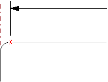
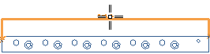

创建一个水平尺寸
-
打开 drf3_bracket_dwg。
-
开始制图应用模块。
-
在尺寸工具条上的制图尺寸下拉菜单中，选择水平尺寸 。
选择平行于延伸线的边的控制点，是为了确保您将得到部件真实长度的精确测量。
例如，如果您选择水平边各端的端点，并且在这些边上有倒圆，可能在无意中就会标注错误的倒圆边的端点。

在这个练习中，您想要在部件端部的两条竖直边上方顶点之间创建水平尺寸。
-
在选择条上，打开端点
 并关闭所有其它点捕捉选项。
并关闭所有其它点捕捉选项。 -
标注部件的整体长度。在前视图中，选择左侧竖直边的端点，然后选择另一侧的端点，但先不要单击放置。
默认的尺寸放置方法是手工放置 — 箭头在内。这个选项让您在延伸线内或外的任意位置手工放置尺寸文本。
-
将尺寸原点在延伸线间来回拖动，查看在光标接近中点时，尺寸文本如何捕捉到那个点。
-
当尺寸文本位于延伸线中间时，单击以放置它。
